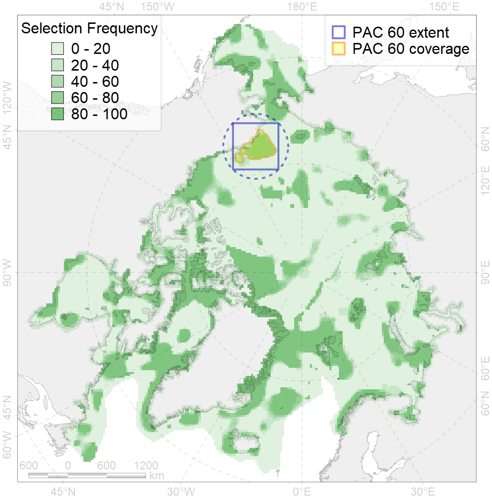
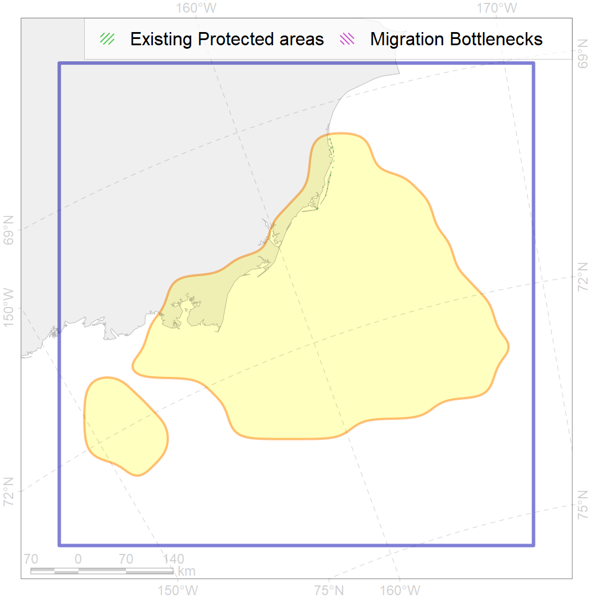

60
For more information regarding this PAC and to conduct custom spatial analysis using the PAC data or any spatial query, please consult Accenter.

0
CFs entirely within the PAC area
14
CFs at least 25% within the PAC area
16
CFs with at least 50% of their target achieved in the PAC
33
CFs with at least half of their target achieved in the PAC
| CF ID | CF Name | Proportion in the PAC | Conservation Target | Contribution to ArcNet Target Achievement | PAC’s Contribution to the Achieved Target |
|---|---|---|---|---|---|
| 5021 | Beluga of the Eastern Chukchi Sea summer core distribution | 90.3% | 72.0% | 96.0% | 94.1% |
| 7004 | NE Chukchi Sea benthic hotspot | 73.2% | 72.0% | 96.6% | 96.4% |
| 7223 | Kelp forests of eastern Chukchi Sea | 71.7% | 30.0% | 138.3% | 99.7% |
| 3108 | Polynyas distribution in the Beaufort Sea coastline region | 67.3% | 12.0% | 430.4% | 97.9% |
| 1016 | Pacific Walrus Feeding Area | 45.1% | 72.0% | 56.7% | 47.7% |
| 7123 | II.2.1.3. Western Beaufort outer shelf | 42.5% | 38.7% | 76.8% | 58.9% |
| 2001 | Bearded seal foraging areas in the Chukchi Sea | 38.7% | 24.0% | 154.3% | 56.4% |
| 9016 | polar bear of the SB (Southern Beaufort Sea) subpopulation distribution | 37.4% | 32.4% | 100.8% | 47.2% |
| 7079 | I.2.1.3. Banks and shoals | 33.3% | 19.1% | 174.1% | 99.4% |
| 5020 | Beluga of the Eastern Chukchi Sea summer distribution | 33.0% | 48.0% | 56.4% | 56.3% |
| 7084 | I.2.2.2.Chukchi Sea Canyons | 27.8% | 24.0% | 100.7% | 90.7% |
| 4078 | Fish zoogeography, Arctic Region, High-Arctic Shelf Province, Wrangel – Beaufort District | 26.3% | 16.4% | 146.3% | 48.0% |
| 2038 | Ringed seal foraging areas in the Chukchi Sea | 25.6% | 24.0% | 105.8% | 41.5% |
| 7020 | Beaufort bathyal region | 25.2% | 2.0% | 865.5% | 49.2% |
| 6050 | Spectacled eider (Somateria fischeri) moulting grounds | 22.8% | 36.0% | 33.6% | 23.6% |
| 2035 | Ribbon seal foraging areas in the Chukchi Sea | 22.3% | 12.0% | 172.4% | 47.7% |
| 7121 | II.2.1.1. Western Beaufort inner shelf | 20.3% | 22.2% | 65.9% | 38.4% |
| 2045 | Ringed seal whelping areas in the Chukchi Sea | 19.5% | 24.0% | 74.2% | 42.1% |
| 7081 | I.2.1.5. Shelf valleys | 19.5% | 20.3% | 90.2% | 44.6% |
| 4013 | Feeding/nursery area of the Bering cisco (Coregonus laurettae), Asian populations | 19.1% | 32.4% | 46.1% | 44.3% |
| 5116 | Beluga of the Eeastern Beaufort Sea autumn core distribution | 17.9% | 24.0% | 65.8% | 48.2% |
| 5109 | Bowhead whale of the Bering-Chukchi-Beaufort population summer core distribution | 17.0% | 86.4% | 16.7% | 16.0% |
| 2008 | Bearded seal whelping areas in the Chukchi Sea | 16.5% | 24.0% | 62.6% | 41.7% |
| 5117 | Beluga of the Eastern Chukchi Sea autumn core distribution | 16.4% | 24.0% | 54.7% | 31.8% |
| 3030 | Marginal Ice Zone distribution in July in the Chukchi Sea LME | 16.3% | 24.0% | 63.7% | 54.1% |
| 7122 | II.2.1.2. Western Beaufort middle shelf | 16.1% | 18.1% | 51.3% | 25.0% |
| 1018 | Pacific Walrus Summer-Autumn Distribution | 16.0% | 24.0% | 60.7% | 26.0% |
| 4005 | Spawning areas of the Pacific Capelin (Mallotus villosus catervarius) in Alaska | 15.8% | 18.0% | 65.5% | 17.2% |
| 7037 | Amerasian shelf transitional zone | 15.4% | 10.6% | 136.5% | 82.8% |
| 4022 | Feeding area of the Inconnu (Stenodus leucichthys nelma), American populations | 15.4% | 32.4% | 35.2% | 21.5% |
| 5105 | Bowhead whale of the Bering-Chukchi-Beaufort population autumn distribution | 14.7% | 28.8% | 44.8% | 35.2% |
| 5052 | Gray whale summer feeding areas | 14.3% | 36.0% | 35.2% | 16.2% |
| 7080 | I.2.1.4. Shelf plains | 13.7% | 3.8% | 327.9% | 37.6% |
| 5106 | Bowhead whale of the Bering-Chukchi-Beaufort population spring distribution | 13.1% | 57.6% | 17.6% | 17.4% |
| 7130 | II.2.2.1. Western Beaufort Slope | 12.5% | 15.3% | 41.6% | 22.8% |
| 9001 | polar bear of the AB (Arctic Basin) subpopulation distribution | 12.3% | 26.4% | 44.8% | 44.6% |
| 3004 | Fast Ice distribution in the Chukchi Sea region | 12.3% | 6.0% | 133.4% | 20.1% |
| 7077 | I.2.1.1. Coastal domain | 12.2% | 26.8% | 29.7% | 27.5% |
| 5108 | Bowhead whale of the Bering-Chukchi-Beaufort population summer distribution | 11.9% | 28.8% | 34.8% | 21.6% |
| 7082 | I.2.1.6. Outer shelf with medium to high profile; from the Blue Habitats map, Harris et al., 2014 | 11.4% | 8.7% | 123.6% | 71.3% |
| 1017 | Pacific Walrus haulouts | 10.9% | 72.0% | 12.2% | 11.9% |
| 4034 | Feeding area of the Taranetz’s Char (Salvelinus taranetzi) | 10.5% | 32.4% | 26.7% | 15.9% |
| 8030 | Salt marshes of the Beaufort Sea LME | 10.4% | 30.0% | 20.0% | 12.2% |
| 9034 | polar bear denning areas of SB (Southern Beaufort Sea) subpopulation | 9.7% | 64.8% | 9.1% | 9.1% |
| 4016 | Feeding area of the Broad whitefish (Coregonus nasus), Euro-Asian populations | 9.2% | 32.4% | 21.7% | 15.4% |
| 4019 | Feeding area of the Vendace, Least cisco (Coregonus sardinellа), American populations | 8.9% | 24.0% | 28.8% | 14.5% |
| 4050 | Range of the Pollock (Theragra chalcogramma) | 8.7% | 6.0% | 130.4% | 19.1% |
| 3005 | Fast Ice distribution in the Beaufort Sea region | 8.1% | 6.0% | 94.3% | 8.7% |
| 4009 | Feeding / nursery area of the Arctic Cisco (Coregonus autumnalis), American populations | 7.4% | 38.4% | 15.8% | 11.6% |
| 7042 | Beaufirt transitional zone | 7.4% | 19.9% | 23.3% | 6.4% |
| 6027 | Glaucous gull (Larus hyperboreus barrovianus) breeding grounds | 6.4% | 12.0% | 35.2% | 10.9% |
| 2054 | Spotted seal foraging areas | 6.2% | 12.0% | 34.7% | 6.8% |
| 7183 | VII.3.5. Deep parts of canyons (below slope) | 5.8% | 23.1% | 13.7% | 9.8% |
| 3032 | Marginal Ice Zone distribution in July in the Beaufort Sea LME | 5.5% | 24.0% | 14.9% | 14.0% |
| 4044 | Range of the Pacific cod (Gadus macrocephalus) | 4.7% | 3.0% | 118.7% | 8.1% |
| 4011 | Feeding area of the Lake whitefish (Coregonus clupeaformis) | 4.7% | 38.4% | 9.3% | 8.8% |
| 6010 | Brent goose (Branta bernicla nigricans) American breeding&moulting grounds | 4.5% | 24.0% | 9.4% | 6.6% |
| 4070 | Local forms of the White-Sea herring (Clupea pallasii) | 4.4% | 24.0% | 15.0% | 8.4% |
| 6107 | Horned puffin (Fratercula corniculata) breeding colonies buffer feeding area | 4.4% | 24.0% | 15.0% | 5.8% |
| 2042 | Ringed seal whelping areas in the Beaufort Sea | 4.3% | 24.0% | 12.2% | 5.4% |
| 4024 | Distribution of the Chum Salmon (Oncorhynchus keta) | 3.8% | 6.0% | 49.0% | 5.8% |
| 4006 | Feeding/nursery area of the Pacific rainbow smelt (Osmerus dentex) | 3.3% | 18.0% | 15.4% | 5.8% |
| 2005 | Bearded seal whelping areas in the Beaufort Sea | 3.3% | 24.0% | 9.3% | 5.4% |
| 4042 | Range of the Saffron cod (Eleginus gracilis) | 3.2% | 6.0% | 45.3% | 6.7% |
| 4023 | Feeding/migration area of the Pink Salmon (Oncorhynchus gorbuscha), native distribution | 2.9% | 6.0% | 40.8% | 6.1% |
| 7083 | I.2.2.1. Chukchi slope | 2.7% | 15.0% | 16.1% | 9.6% |
| 9004 | polar bear of the CS (Chukchi Sea) subpopulation distribution | 2.7% | 32.4% | 6.8% | 5.9% |
| 4065 | Range of the Pacific Halibut (Reinhardtius hippoglossoides matsuurae) | 2.6% | 3.0% | 78.0% | 8.0% |
| 4077 | Fish zoogeography, Arctic Region, High-Arctic Shelf Province, Laptev – East-Siberian District | 1.3% | 12.0% | 9.8% | 5.2% |